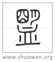
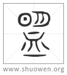

𥂗
篆文从朙。

𧖽
古文从明[朙]。
清代 段玉裁《說文解字注》
- 周禮曰。國有疑則𥁰。
周禮司盟職。掌盟載之法。凡邦國有疑會同。則掌其盟約之載及其禮儀。鄭云。有疑不協也。
- 諸侯再相與會。十二嵗一𥁰。
再相與會四字當作再朝而會、再會六字。轉寫之誤也。昭十三年左傳曰。明王之制。使諸侯嵗聘以志業。閒朝以講禮。再朝而會以示威。再會而盟以顯昭明。杜云。三年而一朝。六年而一會。十二年而一盟。
- 北面詔天之司愼司命。
司盟職曰。北面詔明神。僖二十八年左傳曰。有渝此盟。以相及也。明神先君。是糾是殛。襄十一年載書曰。或閒茲盟。司愼司命。名山名川。羣神羣祀。先王先公。七姓十二國之祖。明神殛之。按今左傳襄十一年盟與命二字互譌。陸、孔皆不能正。許合周禮、左傳爲言。謂司愼、司命爲明神之首。司愼、司命益大宗伯職之司中、司命。文昌宫弟五、弟四星也。尙書大傳注司中作司人。○又按天之司盟見覲禮注。然則左傳正文不容輕改。
- 𥁰殺牲歃血。朱盤玉敦。㠯立牛耳。
朱小徐及周禮作珠。今依大徐本。立當爲莅。莅、臨也。曲禮曰。莅牲曰盟是也。玉府職曰。若合諸侯。則𠔏珠盤玉敦。鄭云。合諸侯者必割牛耳。取其血。歃之以盟。朱盤以盛牛耳。尸盟者執之。玉敦、歃血玉器。戎右職曰。贊牛耳桃茢。左傳曰。諸候盟。誰執牛耳。
- 从囧。
囧、明也。左傳所謂昭明於神。冡上詔司愼司命言。
- 皿聲。
鍇皿作血。云聲字衍。鉉因作从血。𠜂聲字。今與篆體皆正。按盟與孟皆皿聲。故孟津、盟津通用。今音武兵切。古音在十部。讀如芒。亦舉形聲包會意。朱盤玉敦、器也。故从皿。
- 篆文。从朙。
朙小篆文也。故𥂗爲小篆。鍇本云古文从朙。非也。
- 古文从明。
明者、朙之古文也。故古文𥂗作盟。鍇本云籒文。非也。𥁰者、𥂗之籒文。先籒後篆者、以其囧之屬也。今人皆作盟。不從小篆作𥂗者、猶皆作明不作朙也。